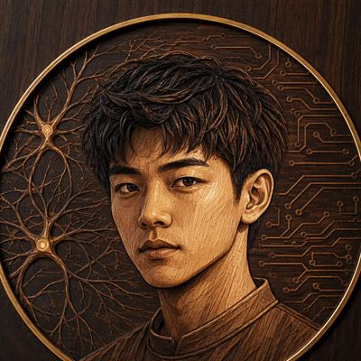

✦
身份定位
2007 年生，广东汕头人。一名正在向「脑机接口」「生物医学工程」前沿工科进发的高中生。

2007 年生，广东汕头人。一名正在向「脑机接口」「生物医学工程」前沿工科进发的高中生。
目标华南理工大学国际校区新工科专业。期待方向：脑机接口（BCI）、生物医学工程、神经科学。
动手拆解过两台旧笔记本、一台旧台式机与一台眼部按摩仪，独自把按摩仪改良成静音版——「能修就修，想懂就拆」。
广东汕头（GMT+8，中国标准时间）。【待补充】现场 / 远程合作均可？请确认。
V1 阶段：对话入口为静态占位原型，V3 后接入真实能力。
拆解一台眼部按摩仪，识别噪音来源后自行改良成静音版本。从「想懂就拆」开始的第一件动手作品，也是我第一次独立完成的硬件改造。
高中阶段接触编程与机器人课程，由此确立工科兴趣。作品/成果数据需进一步可核验素材支撑，V1 暂以方向性描述占位。
【待补充】代表作占位——待补充可核验成果（如脑机接口相关入门实验、作品链接等）后替换。
受母亲熏陶，从小对人类意识与大脑神经机制怀有好奇。
广泛阅读文史哲与科学；动手拆解旧笔记本、台式机与眼部按摩仪。
接触编程与机器人课程；独立完成眼部按摩仪静音改造；目标华南理工大学国际校区新工科。
生物医学工程 / 神经科学——把「大脑」与「机器」连起来的路，才刚刚开始。
拆解与改良电子设备：旧笔记本 / 台式机 / 眼部按摩仪，独立完成按摩仪静音改造。
高中接触编程与机器人课程，正在向工程思维与技术表达方向深入。
广泛阅读文史哲、科学、政治与经济；坚持搏击运动，自律与系统思考。
欢迎来信交流学习、项目或想法。载入中…